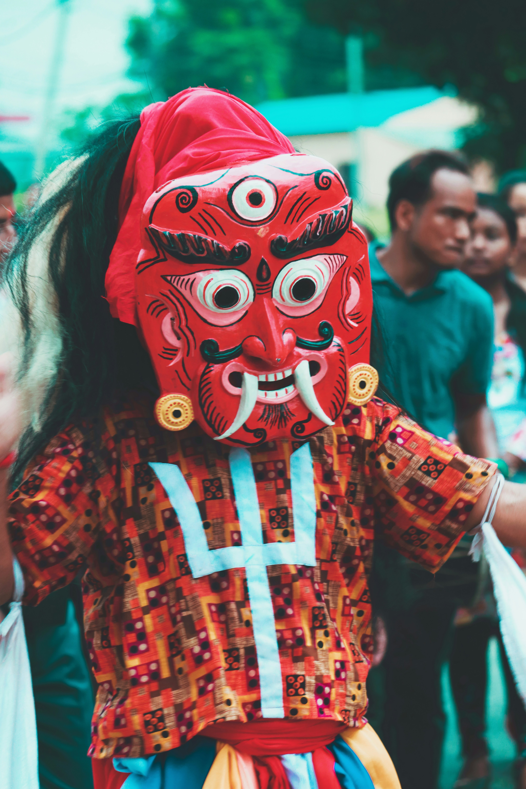

Culture & Heritage
Nepal is rich in cultural diversity with more than 100 ethnic groups. Festivals like Dashain, Tihar, and Holi reflect Nepal’s traditions. Ancient temples, stupas, and heritage sites show the deep spiritual history.
Nepal is rich in cultural diversity with more than 100 ethnic groups. Festivals like Dashain, Tihar, and Holi reflect Nepal’s traditions. Ancient temples, stupas, and heritage sites show the deep spiritual history.